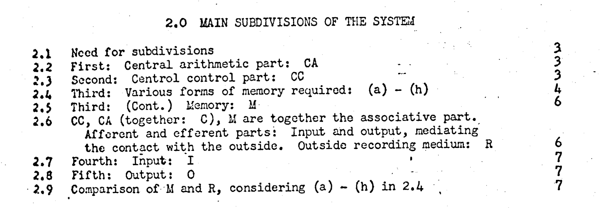
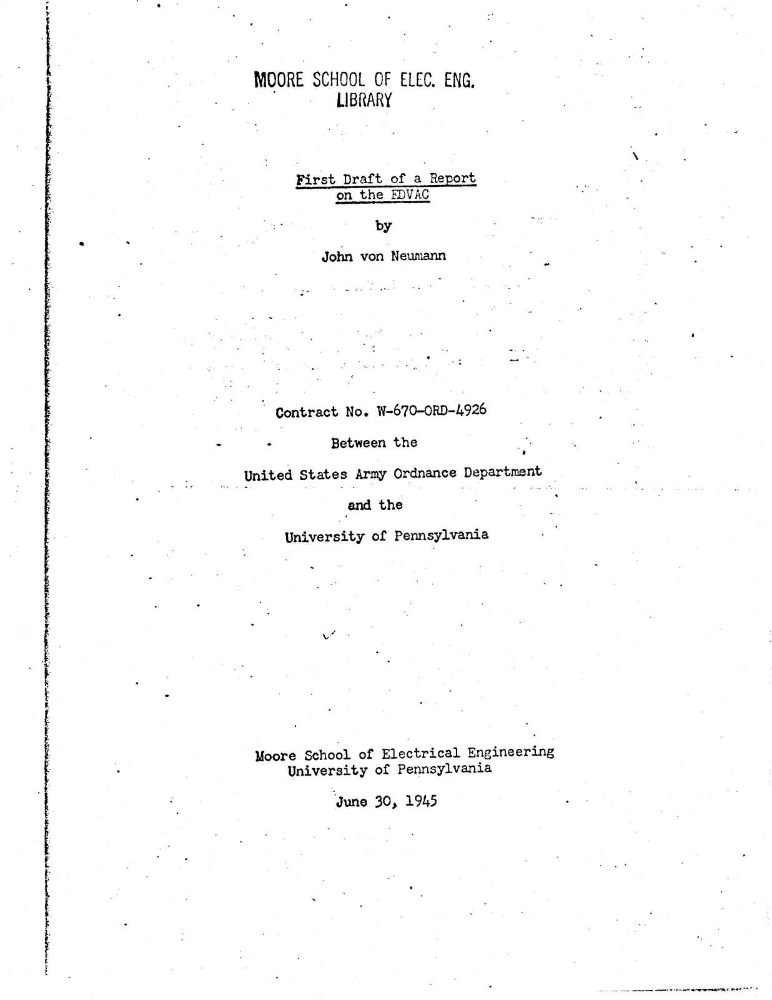

First Draft of a Report on the EDVAC (30 Haziran 1945)
John von Neumann 1945'te, Pennsylvania Üniversitesi Moore School'da ENIAC'ı yapan ekibin yeni makine EDVAC için tartıştığı tasarımı yazıya geçirdi. Kapağında 30 Haziran 1945 tarihi ve yalnızca von Neumann'ın adı bulunan First Draft of a Report on the EDVAC, makineyi beş parçaya ayırır: aritmetik işlemleri yapan CA, işlemlerin sırasını yöneten CC, bellek M, girdi birimi I ve çıktı birimi O. CA ile CC'yi bugün birlikte CPU diye anıyoruz. Rapora göre bir problemi yöneten komutlar da bellekte tutulmalıdır (2.4. bölüm); program ile verinin aynı bellekte durması fikri bu raporla yayıldı. Tasarım ekipte birlikte geliştirildi: J. Presper Eckert ile John Mauchly bu fikirlerin bir kısmının sahibiydi ve Eckert, komutları veriyle aynı hızlı bellekte saklama fikrine von Neumann ekibe katılmadan önce ulaşmıştı. "von Neumann architecture" adı sonradan verildi; tarihçiler ortak bir işi tek kişiye bağladığı için bu adı yerinde bulmuyor.
Raporun beş parçası, derste çizdiğimiz bilgisayar diyagramının kutularıdır: CA ile CC bugünkü CPU, M memory, I input, O output. Run'a bastığınızda Python interpreter'ı ve .py dosyanız diskten memory'ye alınır; programınız ile üzerinde çalıştığı data aynı memory'de durur. Raporun 2.4. bölümündeki fikir budur.
Kaynaklar:
First Draft of a Report on the EDVAC, Moore School of Electrical Engineering, 30 Haziran 1945; Commons taraması (kapak, içindekiler, 2.2-2.8. bölümler)
Computer History Museum, This Day in History, 30 Haziran
T. Haigh, M. Priestley, C. Rope, Reconsidering the Stored-Program Concept, IEEE Annals of the History of Computing 36(1), 2014
B. J. Copeland, The Modern History of Computing, Stanford Encyclopedia of Philosophy
J. A. N. Lee, IEEE Computer Society, Computer Pioneers: John von Neumann


.jpg){kind=link}